Citater
69 citater med kilde og billedlicens. Hvert citat er kontrolleret mod kilden af en uafhængig gennemgang, og hver person er godkendt af ejeren.
Ledere og verdensforandrere

No longer talk at all about the kind of man that a good man ought to be, but be such.Marcus Aurelius 121–180 CE Meditations, c. 170–180 CE · Book X, §16 · Overs. George Long Foto: Daniel Martin, CC BY-SA 4.0, via Wikimedia Commons (https://commons.wikimedia.org/wiki/File:MSR-ra-61-b-1-DM.jpg) · CC BY-SA 4.0
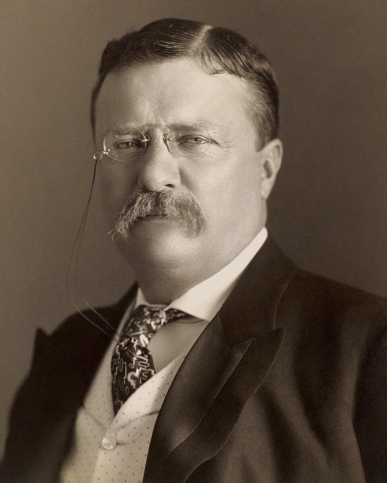
The credit belongs to the man who is actually in the arena, whose face is marred by dust and sweat and blood; who strives valiantly; who errs, who comes short again and again.Theodore Roosevelt 1858–1919 'Citizenship in a Republic', speech at the Sorbonne, Paris, 1910 (23 April) · 'The Man in the Arena' passage Foto: Pach Brothers, 1904 (restored by Adam Cuerden), public domain, via Wikimedia Commons (https://commons.wikimedia.org/wiki/File:Theodore_Roosevelt_by_the_Pach_Bros_(4x5_cropped)_(2).jpg) · Public domain
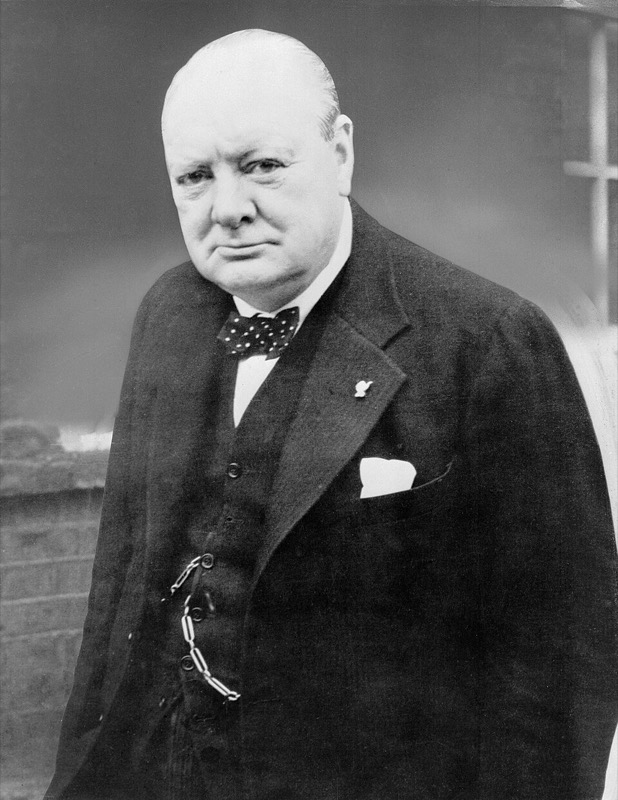
Never give in, never give in, never, never, never—in nothing, great or small, large or petty—never give in except to convictions of honour and good sense.Winston Churchill 1874–1965 Speech at Harrow School, 1941 (29 October) · International Churchill Society transcript Foto: British Government / Imperial War Museum, public domain, via Wikimedia Commons (https://commons.wikimedia.org/wiki/File:Churchill_portrait_NYP_45063.jpg) · Public domain (PD-UKGov)
I have nothing to offer but blood, toil, tears and sweat.Winston Churchill 1874–1965 First speech as Prime Minister, House of Commons ('His Majesty's Government'), 1940 (13 May) · Hansard, HC Deb 13 May 1940, vol. 360, col. 1502 Foto: British Government / Imperial War Museum, public domain, via Wikimedia Commons (https://commons.wikimedia.org/wiki/File:Churchill_portrait_NYP_45063.jpg) · Public domain (PD-UKGov)
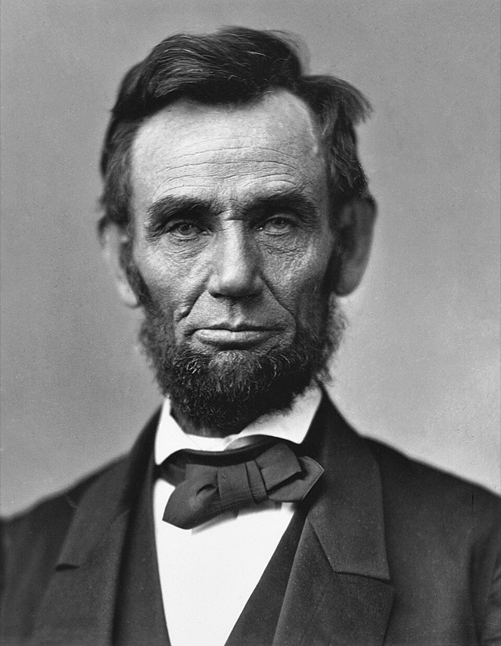
Let us have faith that right makes might, and in that faith, let us, to the end, dare to do our duty as we understand it.Abraham Lincoln 1809–1865 Address at Cooper Institute (Cooper Union), New York, 1860 (27 February) · Closing sentence (printed in capitals in the 1860 text) Foto: Alexander Gardner, Public domain, via Wikimedia Commons (https://commons.wikimedia.org/wiki/File:Abraham_Lincoln_O-77_matte_collodion_print.jpg) · Public domain
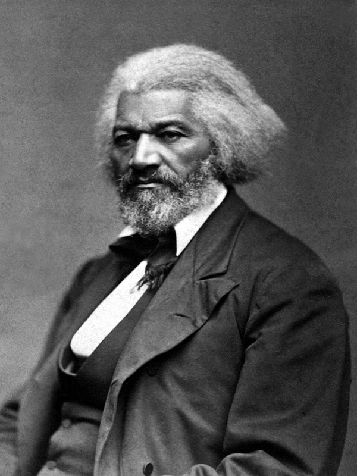
If there is no struggle there is no progress.Frederick Douglass 1818–1895 'West India Emancipation' (The Significance of Emancipation in the West Indies), address at Canandaigua, New York, 1857 (3 August) · Frederick Douglass Papers Project digital edition, item 10509 Foto: George Kendall Warren, Public domain, via Wikimedia Commons (https://commons.wikimedia.org/wiki/File:Frederick_Douglass_(circa_1879)_(cropped).jpg) · Public domain
Power concedes nothing without a demand. It never did and it never will.Frederick Douglass 1818–1895 'West India Emancipation' (The Significance of Emancipation in the West Indies), address at Canandaigua, New York, 1857 (3 August) · Frederick Douglass Papers Project digital edition, item 10509 Foto: George Kendall Warren, Public domain, via Wikimedia Commons (https://commons.wikimedia.org/wiki/File:Frederick_Douglass_(circa_1879)_(cropped).jpg) · Public domain
Strength does not come from physical capacity. It comes from an indomitable will.Mahatma Gandhi 1869–1948 'The Doctrine of the Sword', Young India, 1920 (11 August) · Young India, 11 Aug 1920; Collected Works of Mahatma Gandhi vol. 18 (volume not re-confirmed) Foto: Elliott & Fry, Public domain, via Wikimedia Commons (https://commons.wikimedia.org/wiki/File:Mahatma-Gandhi,_studio,_1931.jpg) · Public domain
You must do the thing you think you cannot do.Eleanor Roosevelt 1884–1962 You Learn by Living, 1960 · Chapter 2, 'Fear—the Great Enemy'; p. 36 in the London (Hutchinson, 1961) edition, checked by archive.org search-inside Foto: FDR Presidential Library & Museum, CC BY 2.0, via Wikimedia Commons (https://commons.wikimedia.org/wiki/File:Eleanor_Roosevelt_at_the_United_Nations,_circa_1946-1947_(3x4_cropped).jpg) · CC BY 2.0
You gain strength, courage, and confidence by every experience in which you really stop to look fear in the face.Eleanor Roosevelt 1884–1962 You Learn by Living, 1960 · Chapter 2, 'Fear—the Great Enemy'; p. 36 in the London (Hutchinson, 1961) edition, checked by archive.org search-inside Foto: FDR Presidential Library & Museum, CC BY 2.0, via Wikimedia Commons (https://commons.wikimedia.org/wiki/File:Eleanor_Roosevelt_at_the_United_Nations,_circa_1946-1947_(3x4_cropped).jpg) · CC BY 2.0

Dost thou love life? then do not squander time, for that is the stuff life is made of.Benjamin Franklin 1706–1790 The Way to Wealth (Father Abraham's speech, preface to Poor Richard Improved), 1758 · quoting 'Poor Richard'; text as in the 1810 and 1814 printings Foto: Joseph-Siffred Duplessis, Public domain, via Wikimedia Commons (https://commons.wikimedia.org/wiki/File:Joseph_Siffrein_Duplessis_-_Benjamin_Franklin_-_Google_Art_Project.jpg) · Public domain
Lost time is never found again.Benjamin Franklin 1706–1790 The Way to Wealth (Father Abraham's speech, preface to Poor Richard Improved), 1758 · quoting 'Poor Richard'; text as in the 1810 and 1814 printings Foto: Joseph-Siffred Duplessis, Public domain, via Wikimedia Commons (https://commons.wikimedia.org/wiki/File:Joseph_Siffrein_Duplessis_-_Benjamin_Franklin_-_Google_Art_Project.jpg) · Public domain
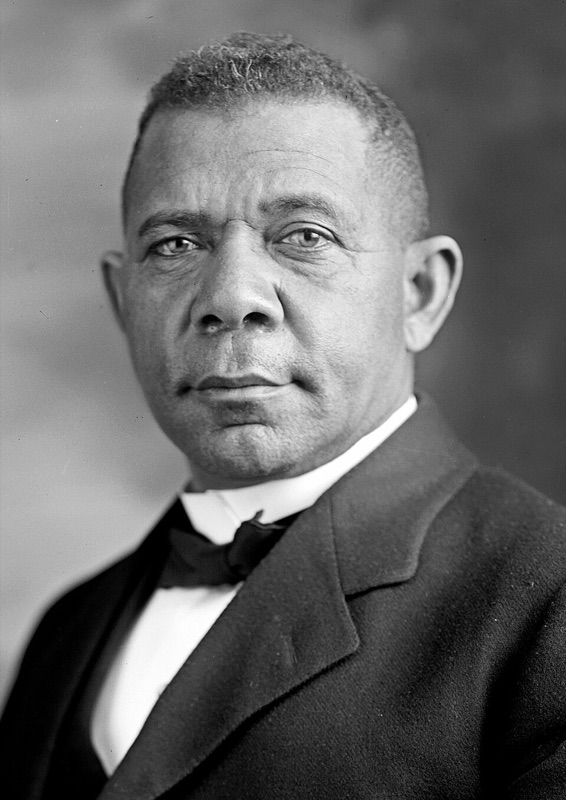
I have learned that success is to be measured not so much by the position that one has reached in life as by the obstacles which he has overcome while trying to succeed.Booker T. Washington 1856–1915 Up from Slavery: An Autobiography, 1901 · Chapter II, 'Boyhood Days' Foto: Harris & Ewing, Public domain, via Wikimedia Commons (https://commons.wikimedia.org/wiki/File:Booker_T_Washington_retouched_flattened-crop.jpg) · Public domain
The only thing we have to fear is fear itself.Franklin D. Roosevelt 1882–1945 First Inaugural Address, Washington, D.C., 1933 (4 March) · American Presidency Project transcript Foto: Leon A. Perskie / FDR Presidential Library & Museum, CC BY 2.0, via Wikimedia Commons (https://commons.wikimedia.org/wiki/File:FDR_1944_Color_Portrait.jpg) · CC BY 2.0
It is common sense to take a method and try it. If it fails, admit it frankly and try another. But above all, try something.Franklin D. Roosevelt 1882–1945 Address at Oglethorpe University, Atlanta, Georgia, 1932 (22 May) · American Presidency Project transcript Foto: Leon A. Perskie / FDR Presidential Library & Museum, CC BY 2.0, via Wikimedia Commons (https://commons.wikimedia.org/wiki/File:FDR_1944_Color_Portrait.jpg) · CC BY 2.0
We choose to go to the moon in this decade and do the other things, not because they are easy, but because they are hard.John F. Kennedy 1917–1963 Address at Rice University, Houston, on the Nation's Space Effort, 1962 (12 September) · American Presidency Project transcript Foto: Cecil W. Stoughton / White House, public domain, via Wikimedia Commons (https://commons.wikimedia.org/wiki/File:John_F._Kennedy,_White_House_color_photo_portrait.jpg) · Public domain (PD-USGov-POTUS)
Ask not what your country can do for you—ask what you can do for your country.John F. Kennedy 1917–1963 Inaugural Address, Washington, D.C., 1961 (20 January) · American Presidency Project transcript Foto: Cecil W. Stoughton / White House, public domain, via Wikimedia Commons (https://commons.wikimedia.org/wiki/File:John_F._Kennedy,_White_House_color_photo_portrait.jpg) · Public domain (PD-USGov-POTUS)
The ultimate measure of a man is not where he stands in moments of comfort and convenience, but where he stands at times of challenge and controversy.Martin Luther King Jr. 1929–1968 Strength to Love (Harper & Row), 1963 · Chapter 3, 'On Being a Good Neighbor', p. 20 (Harper & Row, 1963; checked by archive.org search-inside) Foto: Dick DeMarsico / New York World-Telegram & Sun, public domain, Library of Congress, via Wikimedia Commons (https://commons.wikimedia.org/wiki/File:Martin_Luther_King_Jr_NYWTS.jpg) · Public domain (PD-NYWT&S; Library of Congress cph.3c26559, no known restrictions)
I learned that courage was not the absence of fear, but the triumph over it. … The brave man is not he who does not feel afraid, but he who conquers that fear.Nelson Mandela 1918–2013 Long Walk to Freedom (Little, Brown), 1994 · p. 542 of the Little, Brown (Boston, 1994) edition, closing chapter; checked by archive.org search-inside Foto: John Mathew Smith & www.celebrity-photos.com, CC BY-SA 2.0, via Wikimedia Commons (https://commons.wikimedia.org/wiki/File:Nelson_Mandela_1994.jpg) · CC BY-SA 2.0
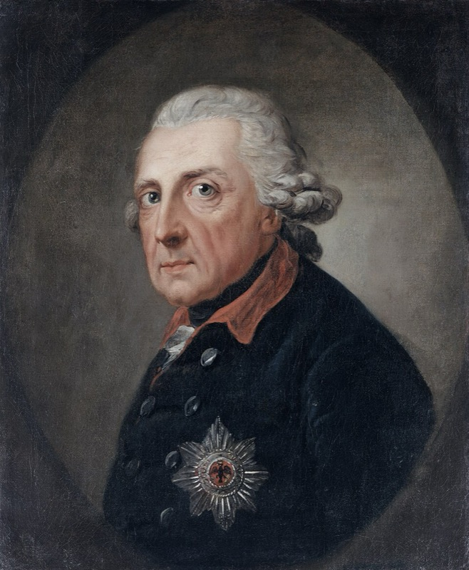
He who would preserve everything, preserves nothing.Frederick the Great 1712–1786 Les principes généraux de la guerre (Instruction for his generals), 1748 · Art. XI, 'Quand et pourquoi il faut faire des détachements'; Œuvres de Frédéric le Grand vol. 28 (Œuvres militaires I, Berlin: Decker, 1856), p. 37–38 · Overs. Thomas R. Phillips Foto: Anton Graff, public domain, via Wikimedia Commons (https://commons.wikimedia.org/wiki/File:Friedrich_der_Gro%C3%9Fe_(1781_or_1786)_-_Google_Art_Project.jpg) · Public domain (PD-Art, PD-old-100)
Discipline is the soul of an army. It makes small numbers formidable; procures success to the weak, and esteem to all.George Washington 1732–1799 Instructions to the Captains of Companies of the Virginia Regiment, Fort Loudoun, 1757 (29 July) · The Writings of George Washington, ed. John C. Fitzpatrick (Washington: GPO, 1931–44), vol. 2; Founders Online (Papers, Colonial Series vol. 4) Foto: Gilbert Stuart, public domain, via Wikimedia Commons (https://commons.wikimedia.org/wiki/File:Gilbert_Stuart_Williamstown_Portrait_of_George_Washington.jpg) · Public domain (PD-Art)
When angry, count ten, before you speak; if very angry, an hundred.Thomas Jefferson 1743–1826 Letter to Thomas Jefferson Smith, Monticello, enclosing 'A Decalogue of Canons for observation in practical life' (canon 10), 1825 (21 February) · The Writings of Thomas Jefferson, Memorial ed., vol. XVI (Washington, 1903–04), p. 111 Foto: Rembrandt Peale, Public domain, via Wikimedia Commons (https://commons.wikimedia.org/wiki/File:Official_Presidential_portrait_of_Thomas_Jefferson_(by_Rembrandt_Peale,_1800).jpg) · Public domain
Erobrere og strateger
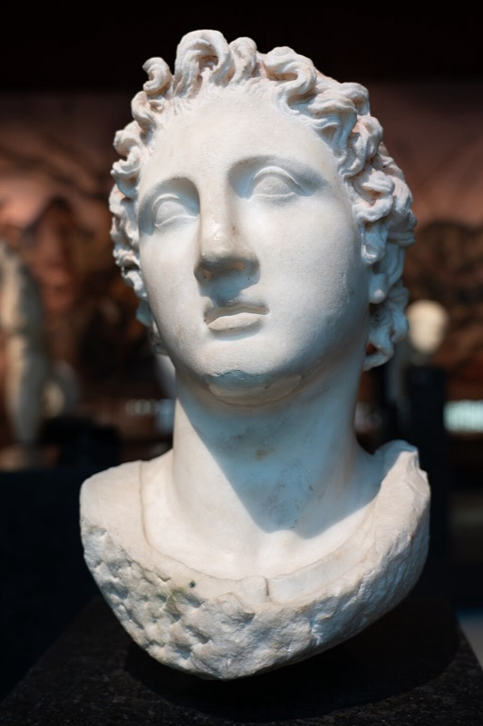
I will not steal my victory.Alexander the Great 356–323 BCE Plutarch, Life of Alexander (eve of Gaugamela, 331 BCE, refusing Parmenio's night attack), c. 100 CE (Plutarch) · ch. 31, §12 · Overs. Bernadotte Perrin Foto: Satdeep Gill, CC BY-SA 4.0, via Wikimedia Commons (https://commons.wikimedia.org/wiki/File:Bust_of_Alexander_the_Great.jpg) · CC BY-SA 4.0
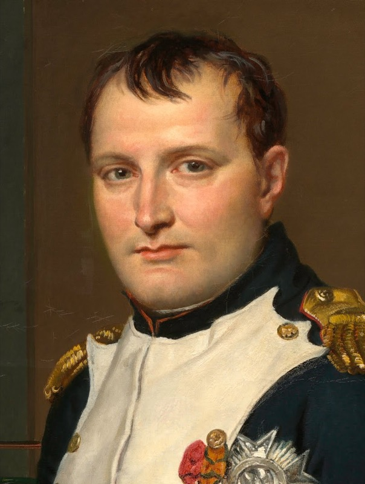
“It is not possible,” you write: that is not French.Napoleon Bonaparte 1769–1821 Letter no. 20256 to General Comte Lemarois, governor of Magdeburg, Dresden, 1813 (9 July) · Correspondance de Napoléon Ier, vol. XXV (Paris: Imprimerie impériale, 1868), no. 20256 · Overs. Edward Latham Foto: Jacques-Louis David, public domain, via Wikimedia Commons · Public domain (PD-Art)
In war, three-quarters turns on personal character and relations; the balance of manpower and materials counts only for the remaining quarter.Napoleon Bonaparte 1769–1821 'Observations sur les affaires d'Espagne', Saint-Cloud, 1808 (27 August) · Correspondance de Napoléon Ier, vol. XVII (Paris: Plon / Dumaine, series 1858–70), no. 14276, 7th observation · Overs. The Oxford Dictionary of Quotations (ed. Elizabeth Knowles); translator not named in the entry Foto: Jacques-Louis David, public domain, via Wikimedia Commons · Public domain (PD-Art)
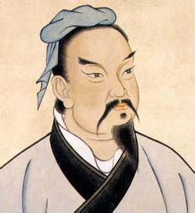
If you know the enemy and know yourself, you need not fear the result of a hundred battles.Sun Tzu c. 544–496 BCE (traditional) The Art of War (Sunzi bingfa), c. 5th century BCE (traditional attribution) · Ch. III 'Attack by Stratagem', §18 · Overs. Lionel Giles Foto: Ukendt kunstner (Qing-dynastiet), Public domain, via Wikimedia Commons (https://commons.wikimedia.org/wiki/File:%E5%90%B4%E5%8F%B8%E9%A9%AC%E5%AD%99%E6%AD%A6.jpg) · Public domain
In war the victorious strategist only seeks battle after the victory has been won, whereas he who is destined to defeat first fights and afterwards looks for victory.Sun Tzu c. 544–496 BCE (traditional) The Art of War (Sunzi bingfa), c. 5th century BCE (traditional attribution) · Ch. IV 'Tactical Dispositions', §15 · Overs. Lionel Giles Foto: Ukendt kunstner (Qing-dynastiet), Public domain, via Wikimedia Commons (https://commons.wikimedia.org/wiki/File:%E5%90%B4%E5%8F%B8%E9%A9%AC%E5%AD%99%E6%AD%A6.jpg) · Public domain
Iværksættere

Your time is limited, so don't waste it living someone else's life.Steve Jobs 1955–2011 Commencement address, Stanford University (text as prepared for delivery, published by Stanford Report, 14 June 2005), 2005 · Delivered 12 June 2005; third story ('death') Foto: Bernard Gotfryd (Library of Congress), public domain, via Wikimedia Commons (https://commons.wikimedia.org/wiki/File:Steve_Jobs_January_1984.jpg) · Public domain (Bernard Gotfryd Photograph Collection, Library of Congress: no known restrictions)


If something's important enough you should try. Even if … the probable outcome is failure.Elon Musk born 1971 60 Minutes (CBS News), interview by Scott Pelley ('Tesla and SpaceX: Elon Musk's industrial empire'), 2014 · Broadcast 30 March 2014; CBS transcript, Musk's answer to 'Then why try?' Foto: Steve Jurvetson, CC BY 2.0, via Wikimedia Commons (https://commons.wikimedia.org/wiki/File:Elon_Musk_2015.jpg) · CC BY 2.0
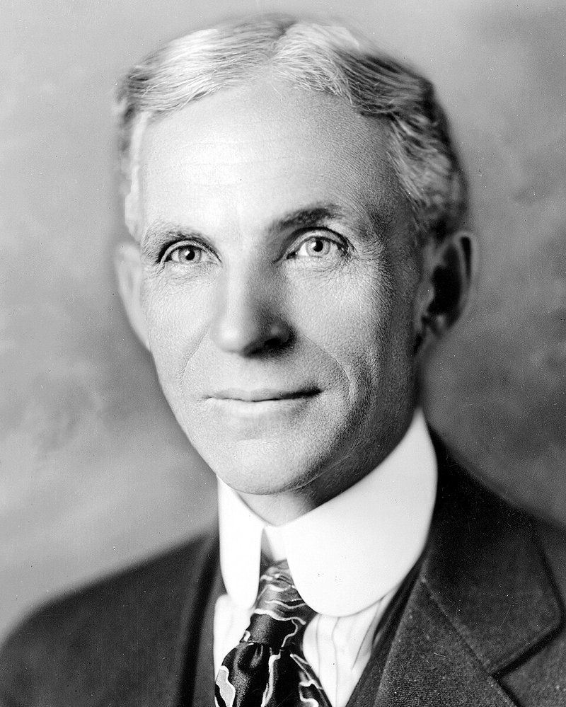
Failure is only the opportunity more intelligently to begin again. There is no disgrace in honest failure; there is disgrace in fearing to fail.Henry Ford 1863–1947 My Life and Work, in collaboration with Samuel Crowther (Garden City, NY: Doubleday, Page & Co.), 1922 · Introduction, 'What Is the Idea?' (the same sentences recur in Chapter XIX) Foto: Hartsook, c. 1919, public domain, via Wikimedia Commons (https://commons.wikimedia.org/wiki/File:Henry_ford_1919_(cropped).jpg) · Public domain (PD-US; Library of Congress cph.3c11278)
Day 2 is stasis. Followed by irrelevance. Followed by excruciating, painful decline. Followed by death. And that is why it is always Day 1.Jeff Bezos born 1964 2016 Letter to Shareholders (Amazon.com, Inc.), filed with the SEC as Exhibit 99.1 to Form 8-K, 2017 · Letter dated April 2017 (8-K filed 12 April 2017), opening paragraph, answering 'Jeff, what does Day 2 look like?' Foto: Seattle City Council, CC BY 2.0, via Wikimedia Commons (https://commons.wikimedia.org/wiki/File:Jeff_Bezos_at_Amazon_Spheres_Grand_Opening_in_Seattle_-_2018_(39074799225)_(cropped).jpg) · CC BY 2.0
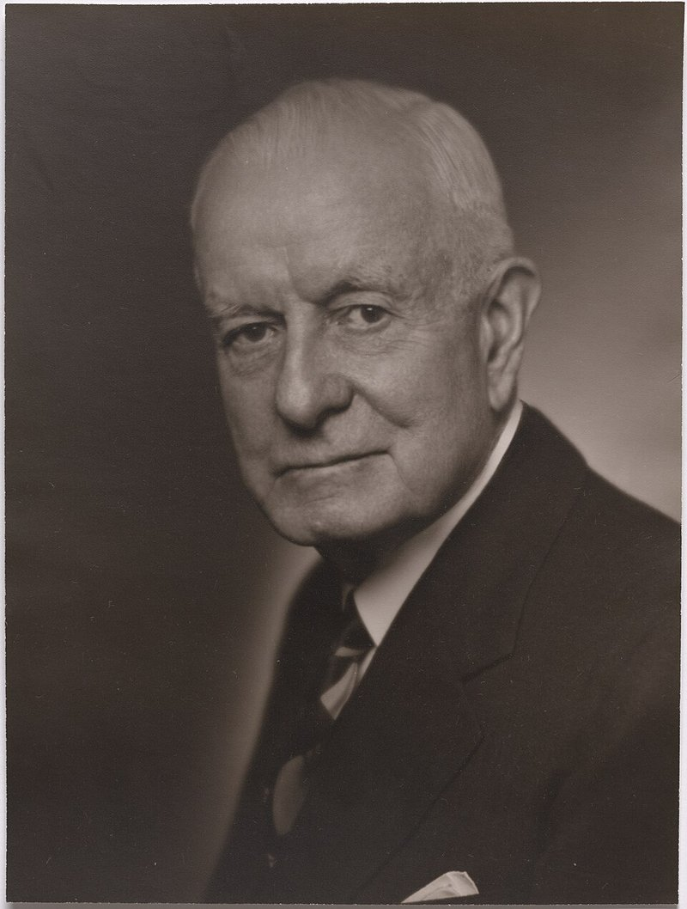
The trouble with every one of us is that we don't think enough. We don't get paid for working with our feet — we get paid for working with our heads.Thomas J. Watson 1874–1956 Impromptu talk at a sales meeting of the National Cash Register Company, Dayton, Ohio — the origin of the THINK motto he took to IBM; wording as recorded by IBM, 1911 (IBM's page says 1915, impossible for an NCR meeting — Watson ran CTR from 1914) · Speech at an NCR sales meeting, Dayton (1911); printed in Watson's lifetime in B. C. Forbes, America's Fifty Foremost Business Leaders (New York: B. C. Forbes & Sons, 1948), p. 427; also on IBM Heritage, 'The origins of THINK' Foto: Oscar White / National Portrait Gallery, Smithsonian Institution, CC0, via Wikimedia Commons (https://commons.wikimedia.org/wiki/File:Thomas_J._Watson_-_National_Portrait_Gallery.jpg) · CC0 (Smithsonian Open Access)
Success is a lousy teacher. It seduces smart people into thinking they can't lose.Bill Gates born 1955 The Road Ahead, with Nathan Myhrvold and Peter Rinearson (New York: Viking), 1995 · Chapter 3, 'Lessons from the Computer Industry', opening lines (p. 35 of the Viking first edition, per the earlier verification) Foto: Kuhlmann/MSC, CC BY 3.0 DE, via Wikimedia Commons (https://commons.wikimedia.org/wiki/File:Bill_Gates_2017_(cropped).jpg) · CC BY 3.0 DE
We simply attempt to be fearful when others are greedy and to be greedy only when others are fearful.Warren Buffett born 1930 Chairman's letter to the shareholders of Berkshire Hathaway Inc., 1986 annual report, 1987 · Letter dated 27 February 1987, section on marketable securities Foto: Mark Hirschey, CC BY-SA 2.0, via Wikimedia Commons (https://commons.wikimedia.org/wiki/File:Warren_Buffett_KU_Visit.jpg) · CC BY-SA 2.0
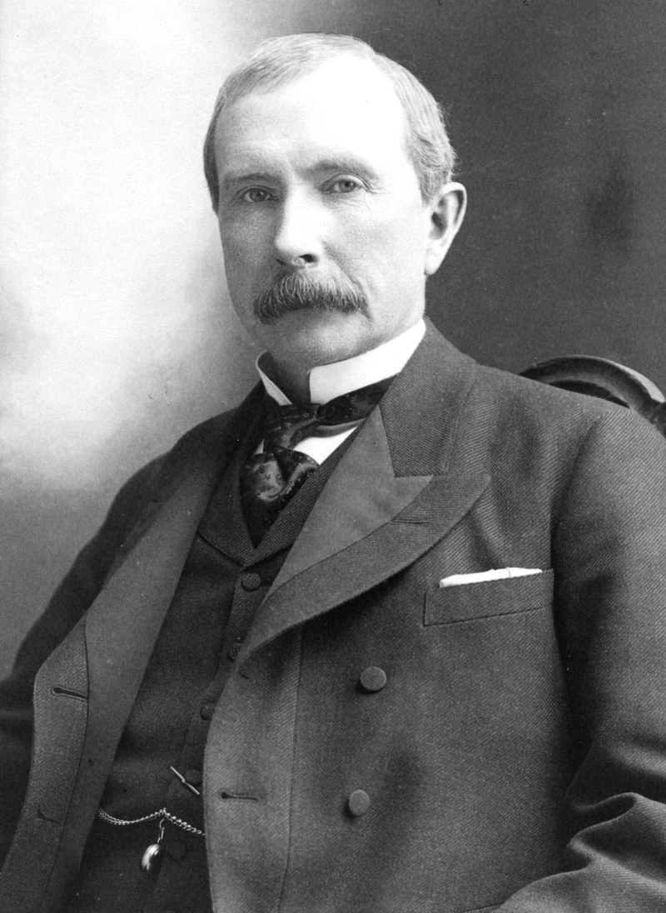
I do not think there is any other quality so essential to success of any kind as the quality of perseverance. It overcomes almost everything, even nature.John D. Rockefeller 1839–1937 Interview with Orison Swett Marden, in How They Succeeded: Life Stories of Successful Men Told by Themselves (Boston: Lothrop Publishing Co.), 1901 · Chapter 'John D. Rockefeller', Rockefeller's quoted answer to the interviewer; p. 206 (±1, from the OCR page headers of archive.org scan howtheysucceeded00mardrich) Foto: Photograph 1895, published 1907, public domain, via Wikimedia Commons (https://commons.wikimedia.org/wiki/File:Portrait_of_J._D._Rockefeller.jpg) · Public domain (PD-US-expired)
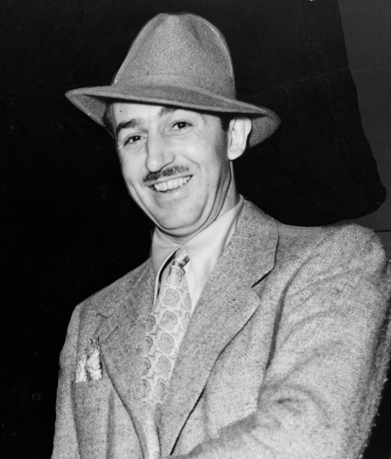
You may not realize it when it happens, but a kick in the teeth may be the best thing in the world for you.Walt Disney 1901–1966 Diane Disney Miller, as told to Pete Martin, The Story of Walt Disney (New York: Henry Holt), quoting Walt Disney directly, 1957 · Diane Disney Miller, The Story of Walt Disney (Henry Holt, 1957), p. 89, Walt quoted directly; earlier form ('a kick in the pants…') in the Saturday Evening Post serial, 1956 Foto: Alan Fisher / New York World-Telegram & Sun (Library of Congress), public domain, via Wikimedia Commons (https://commons.wikimedia.org/wiki/File:Walt_Disney_NYWTS.jpg) · Public domain (New York World-Telegram & Sun collection, Library of Congress: no known copyright restrictions)

Sportsfolk
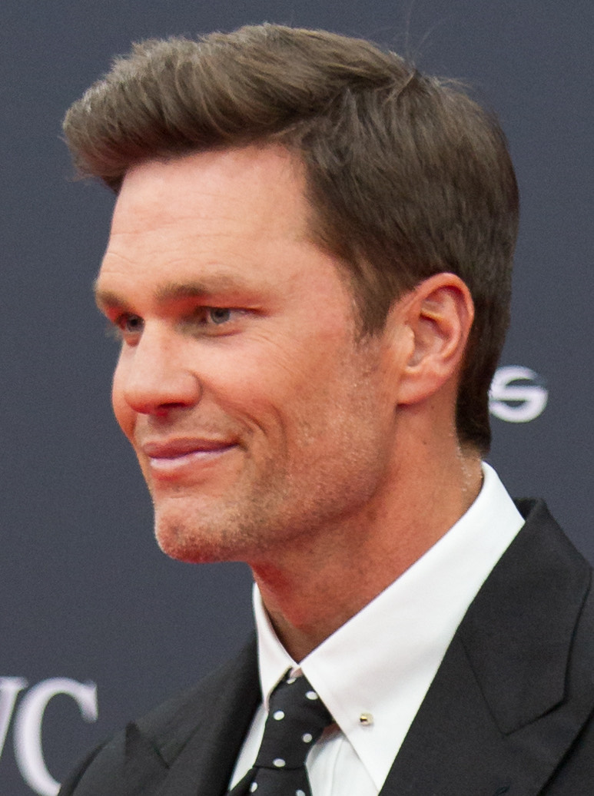
I've always said the next one. The next one's the best.Tom Brady b. 1977 60 Minutes (CBS News), interview by Steve Kroft, 2005 · CBS transcript 'Tom Brady, Part 3': Brady's answer when asked about his favourite ring (the bracketed words are editorial context, not his) Foto: Barcex, CC BY-SA 4.0, via Wikimedia Commons (https://commons.wikimedia.org/wiki/File:25th_Laureus_World_Sports_Awards_-_Red_Carpet_-_Tom_Brady_-_240422_191334_(headshot_cropped).jpg) · CC BY-SA 4.0
I knew that at some point God was going to give it to meLionel Messi b. 1987 Interview with Televisión Pública (Argentina) minutes after the 2022 World Cup final, Lusail, 18 December 2022; Spanish text as printed by Milenio and Crónica Global, 2022 · 18 Dec 2022, post-match pitchside interview; broadcast video/timestamp NOT obtained. The sentence continues in the original ('y no sé por qué presentía y sentía que iba a ser esta'); the entry uses its first clause only. · Overs. Marca in English (outlet's printed translation; not mine) Foto: Bryan Berlin, CC BY-SA 4.0, via Wikimedia Commons (https://commons.wikimedia.org/wiki/File:Lionel_Messi_NE_Revolution_Inter_Miami_7.9.25-178_(cropped_2).jpg) · CC BY-SA 4.0
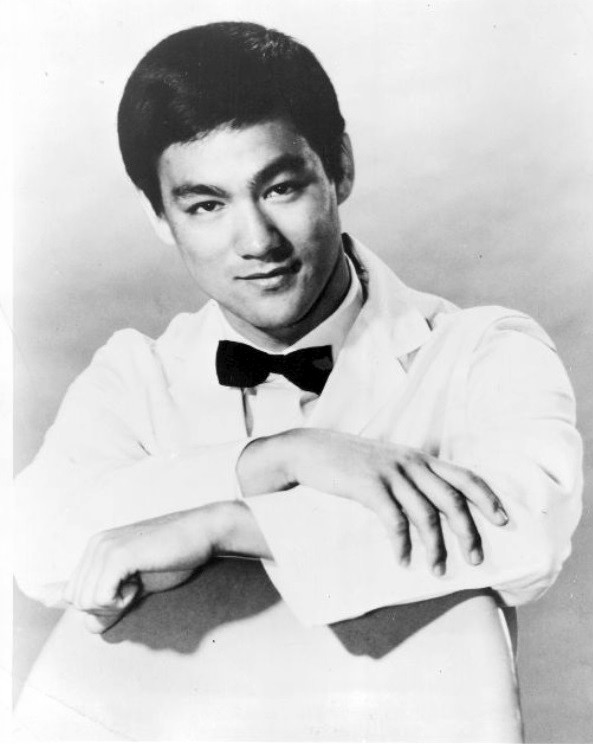
There are no limits. There are plateaus, but you must not stay there, you must go beyond them.Bruce Lee 1940–1973 The Art of Expressing the Human Body, ed. John Little (Tuttle, 1998): posthumous compilation of Lee's notes and talks; Lee spoke English, 1998 · p. 23 (Tuttle, Boston 1998; confirmed by archive.org search-inside) Foto: ABC Television, restore by BevinKacon, Public domain, via Wikimedia Commons (https://commons.wikimedia.org/wiki/File:Bruce_Lee_as_Kato_1967.jpg) · Public domain
Every day I woke up in the morning and started training, and in the evening my body was exhausted …Khabib Nurmagomedov b. 1988 Esquire Middle East, 'Exclusive: Khabib Nurmagomedov's first interview since his retirement', published 1 March 2021, 2021 · Printed as Khabib's own words in English; the article does not say whether he spoke English or Russian. The sentence continues with a short 'because' clause that this entry leaves out (verbatim first 19 words of a 27-word sentence). Foto: Presidential Executive Office of Russia (kremlin.ru), CC BY 4.0, via Wikimedia Commons (source http://www.kremlin.ru/catalog/persons/409/events/61516/photos/60878) · CC BY 4.0
If every player plays like a jazz musician, it will be chaos.Pep Guardiola b. 1971 The Guardian, 'Pep Guardiola: "When I finish I will disappear. You won't find me in your life"', interview by Roger Bennett, 3 January 2017, 2017 · Printed in English as Guardiola's answer on structure versus freedom; one sentence from the answer. The article does not state the language of delivery; no video, so no timestamp. Foto: Steffen Prößdorf (crop by ArsenalGhanaPartey), CC BY-SA 4.0, via Wikimedia Commons (https://commons.wikimedia.org/wiki/File:Pep_Guardiola_2021.jpg) · CC BY-SA 4.0
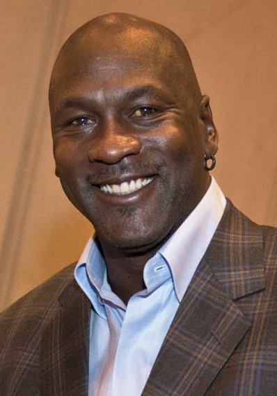
I can accept failure. Everyone fails at something. But I can't accept not trying.Michael Jordan born 1963 I Can't Accept Not Trying: Michael Jordan on the Pursuit of Excellence, with Mark Vancil (San Francisco: HarperSanFrancisco), 1994 · Page not determined (the passage that gives the book its title) Foto: D. Myles Cullen (U.S. Department of Defense), Public domain, via Wikimedia Commons (https://commons.wikimedia.org/wiki/File:Michael_Jordan_in_2014.jpg) · Public domain

He who is not courageous enough to take risks will accomplish nothing in life.Muhammad Ali 1942–2016 Quoted by columnist Bernie Lincicome, Fort Lauderdale News, 1977 · 14 April 1977, p. 6D Foto: Ira Rosenberg, World Journal Tribune (Library of Congress, NYWT&S collection), Public domain, via Wikimedia Commons (https://commons.wikimedia.org/wiki/File:Muhammad_Ali_NYWTS.jpg) · Public domain

When you're playing a point, it is the most important thing in the world. But when it's behind you, it's behind you.Roger Federer born 1981 Commencement address, Dartmouth College, 2024 · Delivered 9 June 2024; Dartmouth's published text, second lesson ('It's only a point') Foto: Tatiana (Flickr, Moscow), CC BY-SA 2.0, via Wikimedia Commons (https://commons.wikimedia.org/wiki/File:Roger_Federer_2015_(cropped).jpg) · CC BY-SA 2.0
… those times when you don't feel like working and you're tired and you don't want to push yourself, but you do it anyway. That is actually the dream.Kobe Bryant 1978–2020 Speech at his jersey-retirement ceremony, Staples Center, Los Angeles; as reported by Ben Golliver, 'Idol Worship: Lakers Raise Kobe Bryant's Jerseys to Rafters in Raucous Ceremony', Sports Illustrated, 2017 · Speech delivered 18 December 2017 (halftime, Lakers v Warriors); SI article dated 19 December 2017 Foto: Keith Allison, CC BY-SA 2.0, via Wikimedia Commons (https://commons.wikimedia.org/wiki/File:Kobe_Bryant_2014.jpg) · CC BY-SA 2.0
Limits, like fears, are often just an illusion.Michael Jordan born 1963 Enshrinement speech, Naismith Memorial Basketball Hall of Fame, Springfield, Massachusetts, 2009 · Delivered 11 September 2009; the closing lines ('Never say never, because limits, like fears…'); official video uploaded by the Hall of Fame (YouTube @OfficialHoophall, id XLzBMGXfK4c) Foto: D. Myles Cullen (U.S. Department of Defense), Public domain, via Wikimedia Commons (https://commons.wikimedia.org/wiki/File:Michael_Jordan_in_2014.jpg) · Public domain
If you put a limit on anything, you put a limit on how far you can go.Michael Phelps born 1985 No Limits: The Will to Succeed, with Alan Abrahamson (New York: Free Press), 2008 · Page not determined (first-person passage about believing he could swim 4:03) Foto: Agência Brasil Fotografias, CC BY 2.0, via Wikimedia Commons (https://commons.wikimedia.org/wiki/File:Michael_Phelps_Rio_Olympics_2016.jpg) · CC BY 2.0
I doubt about myself. I think the doubts are good in life.Rafael Nadal born 1986 Interview with Sean Gregory, "Rafael Nadal: 'I Doubt About Myself'", TIME, 2014 · 22 May 2014 Foto: Tourism Victoria, CC BY 2.0, via Wikimedia Commons (https://commons.wikimedia.org/wiki/File:Rafael_Nadal_January_2015.jpg) · CC BY 2.0
Tænkere, videnskab og kunst
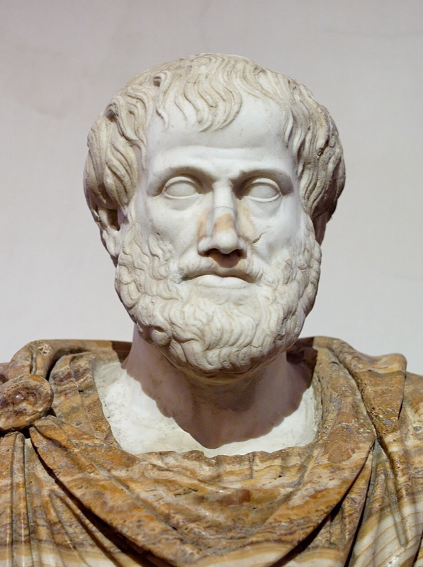
It is by doing just acts that we become just, by doing temperate acts that we become temperate, by doing courageous acts that we become courageous.Aristotle 384–322 BCE Nicomachean Ethics, c. 340 BCE · Book II, ch. 1 (1103a34–b2); Welldon 1892, p. 35 · Overs. J. E. C. Welldon Foto: Photo by Jastrow (2006), public domain; Roman copy after Lysippos; via Wikimedia Commons (https://commons.wikimedia.org/wiki/File:Aristotle_Altemps_Inv8575.jpg) · Public domain (photo PD-self by Jastrow; bust PD-old)
For as one swallow or one day does not make a spring, so one day or a short time does not make a fortunate or happy man.Aristotle 384–322 BCE Nicomachean Ethics, c. 340 BCE · Book I, ch. 6 in Welldon's numbering (ch. 7 in Bekker/Ross; 1098a18–20); Welldon 1892, p. 16 · Overs. J. E. C. Welldon Foto: Photo by Jastrow (2006), public domain; Roman copy after Lysippos; via Wikimedia Commons (https://commons.wikimedia.org/wiki/File:Aristotle_Altemps_Inv8575.jpg) · Public domain (photo PD-self by Jastrow; bust PD-old)
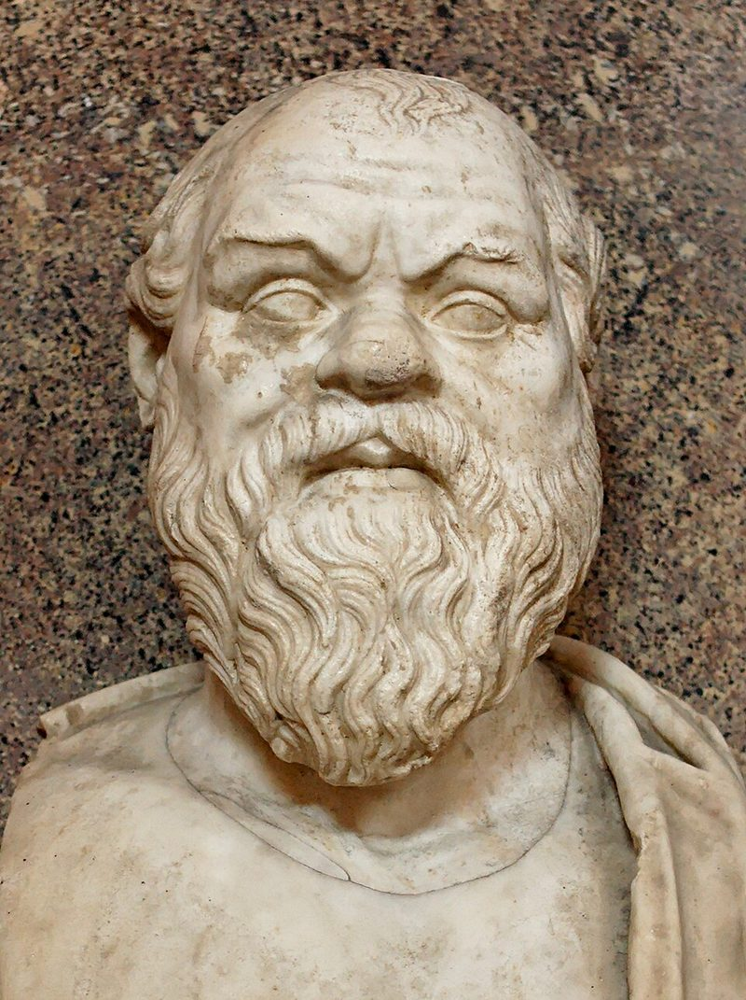
The unexamined life is not worth living.Socrates c. 470–399 BCE Plato, Apology of Socrates (Socrates' defence speech, as written by Plato), c. 399–390 BCE · Apology 38a (Stephanus) · Overs. Benjamin Jowett Foto: Photo by Jastrow (2006), public domain; Roman copy of a Greek original; via Wikimedia Commons (https://commons.wikimedia.org/wiki/File:Socrates_Pio-Clementino_Inv314.jpg) · Public domain (photo PD-self by Jastrow; Roman bust)
No evil can happen to a good man, either in life or after death.Socrates c. 470–399 BCE Plato, Apology of Socrates (closing words to the judges after the death sentence), c. 399–390 BCE · Apology 41c–d (Stephanus) · Overs. Benjamin Jowett Foto: Photo by Jastrow (2006), public domain; Roman copy of a Greek original; via Wikimedia Commons (https://commons.wikimedia.org/wiki/File:Socrates_Pio-Clementino_Inv314.jpg) · Public domain (photo PD-self by Jastrow; Roman bust)
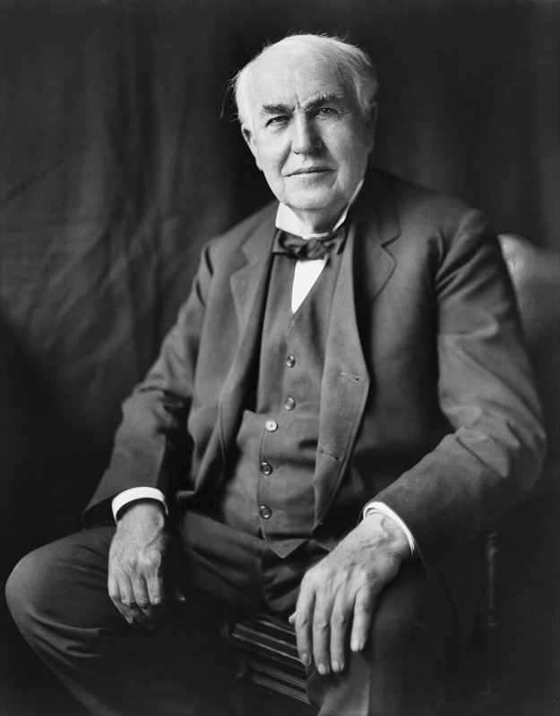
Genius is one per cent inspiration, ninety-nine per cent perspiration.Thomas Edison 1847–1931 M. A. Rosanoff, 'Edison in His Laboratory', Harper's Monthly Magazine vol. 165, p. 406 (Edison speaking); earlier as 'Genius is 1 per cent. inspiration and 99 per cent. perspiration' in F. L. Dyer & T. C. Martin, Edison: His Life and Inventions (1910), vol. II, p. 607, 1932 (1910 for the authorised biography) · Quote Investigator, 'Genius Is One Percent Inspiration, Ninety-Nine Percent Perspiration' (14 Dec 2012) Foto: Louis Bachrach, Bachrach Studios, c. 1922 (restored by Michel Vuijlsteke), public domain, Library of Congress, via Wikimedia Commons (https://commons.wikimedia.org/wiki/File:Thomas_Edison2.jpg) · Public domain (PD-US; Library of Congress cph.3c05139)
Results! Why, man, I have gotten a lot of results! I know several thousand things that won't work.Thomas Edison 1847–1931 F. L. Dyer & T. C. Martin, Edison: His Life and Inventions (New York: Harper & Brothers), vol. II — recollection of Edison's associate Walter S. Mallory, during the storage-battery experiments, 1910 · Vol. II, p. 616 (pagination of the 1929 reissue; 1910 scan leaf 168) Foto: Louis Bachrach, Bachrach Studios, c. 1922 (restored by Michel Vuijlsteke), public domain, Library of Congress, via Wikimedia Commons (https://commons.wikimedia.org/wiki/File:Thomas_Edison2.jpg) · Public domain (PD-US; Library of Congress cph.3c05139)
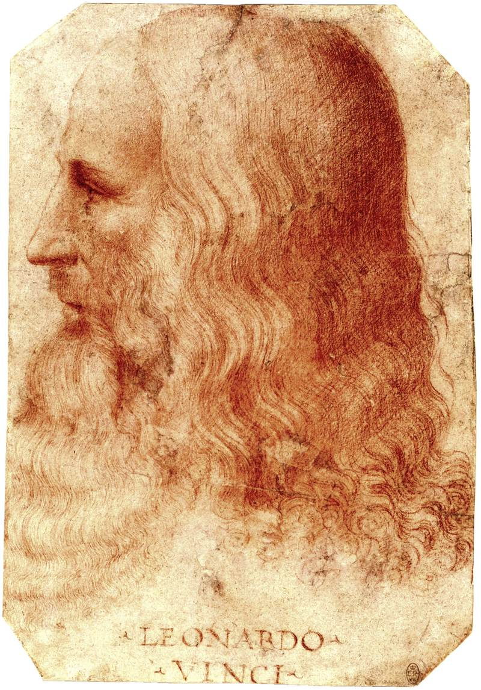
Just as iron rusts unless it is used, and water putrifies or, in cold, turns to ice, so our intellect spoils unless it is kept in use.Leonardo da Vinci 1452–1519 Notebooks (Codex Atlanticus), philosophical maxims, c. 1490s–1510s · Richter no. 1177; 1883 ed. vol. II, p. 294 · Overs. Jean Paul Richter Foto: Attributed to Francesco Melzi, public domain, via Wikimedia Commons (https://commons.wikimedia.org/wiki/File:Francesco_Melzi_-_Portrait_of_Leonardo_(colour_correction).png) · Public domain (PD-Art, PD-old-100)
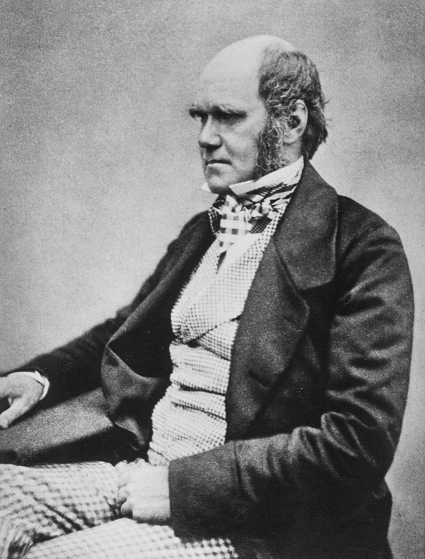
A man who dares to waste one hour of time has not discovered the value of life.Charles Darwin 1809–1882 Letter to his sister Susan Darwin, written aboard HMS Beagle at Bahia, Brazil (4 August 1836), 1836 · Darwin Correspondence Project DCP-LETT-306; printed in F. Darwin (ed.), The Life and Letters of Charles Darwin, vol. 1 (1887), ch. 'The Voyage' Foto: Maull & Fox, c. 1854 (crop by Beao), public domain, via Wikimedia Commons (https://commons.wikimedia.org/wiki/File:Charles_Darwin_seated_crop.jpg) · Public domain (PD-old-70; PD-US expired)
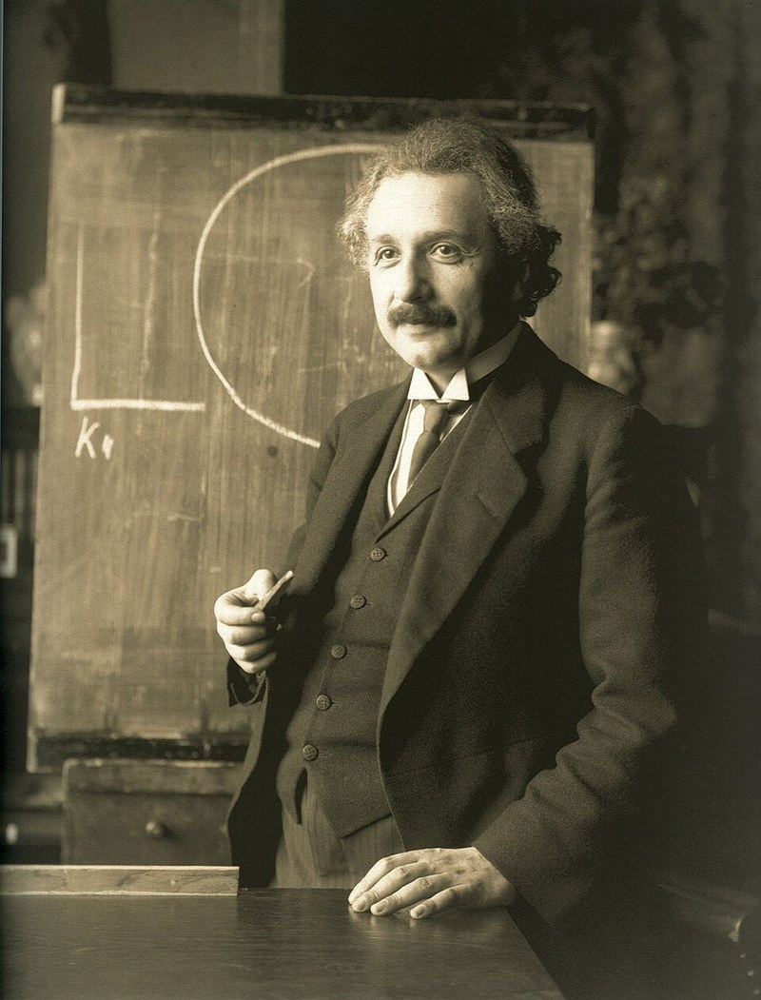
Life is like riding a bicycle. To keep your balance you must keep moving.Albert Einstein 1879–1955 Letter to his son Eduard Einstein (5 February 1930), Albert Einstein Archives, Hebrew University of Jerusalem, 1930 · Quote Investigator, 'Life Is Like Riding a Bicycle. To Keep Your Balance You Must Keep Moving' (28 June 2015) · Overs. Walter Isaacson Foto: Ferdinand Schmutzer, 1921 (restored by Adam Cuerden), public domain, via Wikimedia Commons (https://commons.wikimedia.org/wiki/File:Einstein_1921_by_F_Schmutzer_-_restoration.jpg) · Public domain (PD-Austria; PD-old-auto-expired, photographer †1928)
Try not to become a man of success, but rather try to become a man of value.Albert Einstein 1879–1955 William Miller, 'Death of a Genius', LIFE magazine (2 May 1955), p. 64 — Einstein's words to Miller, spoken in English, 1955 · Quote Investigator, 'Try Not To Become a Man of Success But Rather Try To Become a Man of Value' (20 November 2017) Foto: Ferdinand Schmutzer, 1921 (restored by Adam Cuerden), public domain, via Wikimedia Commons (https://commons.wikimedia.org/wiki/File:Einstein_1921_by_F_Schmutzer_-_restoration.jpg) · Public domain (PD-Austria; PD-old-auto-expired, photographer †1928)

There is a tide in the affairs of men, / Which, taken at the flood, leads on to fortune; / Omitted, all the voyage of their life / Is bound in shallows and in miseries.William Shakespeare 1564–1616 Julius Caesar (Brutus to Cassius), c. 1599 (First Folio 1623) · Act 4, Scene 3, lines 249–252 (Folger); 4.3.244–247 in the MIT/Moby numbering Foto: Attributed to John Taylor, Chandos portrait (National Portrait Gallery, London), public domain, via Wikimedia Commons (https://commons.wikimedia.org/wiki/File:William_Shakespeare_by_John_Taylor,_edited.jpg) · Public domain (PD-Art, PD-old-100-expired)
Our doubts are traitors, / And make us lose the good we oft might win / By fearing to attempt.William Shakespeare 1564–1616 Measure for Measure (Lucio to Isabella), c. 1603–04 (First Folio 1623) · Act 1, Scene 4, lines 85–87 (Folger); 1.4.84–86 in the MIT/Moby numbering Foto: Attributed to John Taylor, Chandos portrait (National Portrait Gallery, London), public domain, via Wikimedia Commons (https://commons.wikimedia.org/wiki/File:William_Shakespeare_by_John_Taylor,_edited.jpg) · Public domain (PD-Art, PD-old-100-expired)
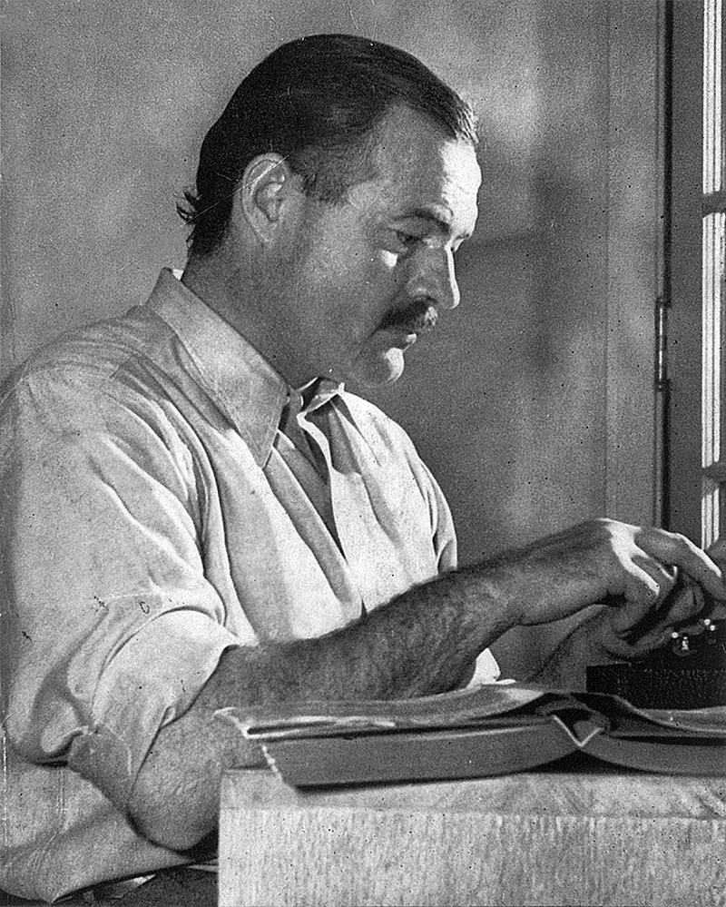
But man is not made for defeat. A man can be destroyed but not defeated.Ernest Hemingway 1899–1961 The Old Man and the Sea (New York: Charles Scribner's Sons; first printed in LIFE, 1 September 1952), 1952 · Santiago, after the first shark attack; 1952 Charles Scribner's Sons first edition, p. 114 (archive.org search-inside of bwb_O8-BOU-944) Foto: Lloyd Arnold, 1939, public domain (copyright not renewed), via Wikimedia Commons (https://commons.wikimedia.org/wiki/File:ErnestHemingway.jpg) · Public domain (PD-US-not-renewed)
The world breaks every one and afterward many are strong at the broken places.Ernest Hemingway 1899–1961 A Farewell to Arms (New York: Charles Scribner's Sons), 1929 · Book IV, Chapter XXXIV (narrator Frederic Henry) Foto: Lloyd Arnold, 1939, public domain (copyright not renewed), via Wikimedia Commons (https://commons.wikimedia.org/wiki/File:ErnestHemingway.jpg) · Public domain (PD-US-not-renewed)
For the great things are not done only by impulse, but are a series of small things brought together.Vincent van Gogh 1853–1890 Letter to Theo van Gogh, The Hague, 22 October 1882, 1882 · Letter 237 (1914/1927 numbering; vangoghletters.org no. 274); 1927 ed. vol. I, p. 538 · Overs. Johanna van Gogh-Bonger Foto: Vincent van Gogh, Self-Portrait, 1887, public domain, via Wikimedia Commons (https://commons.wikimedia.org/wiki/File:Vincent_van_Gogh_-_Self-Portrait_-_Google_Art_Project_(454045).jpg) · Public domain (PD-Art, PD-old-100-expired)
If you hear a voice within you saying: “you are no painter,” then paint by all means, lad, and that voice will be silenced.Vincent van Gogh 1853–1890 Letter to Theo van Gogh, Nieuw-Amsterdam (Drenthe), 28 October 1883, 1883 · Letter 336 (1914/1927 numbering; vangoghletters.org no. 400); 1927 ed. vol. II, p. 332 · Overs. Johanna van Gogh-Bonger Foto: Vincent van Gogh, Self-Portrait, 1887, public domain, via Wikimedia Commons (https://commons.wikimedia.org/wiki/File:Vincent_van_Gogh_-_Self-Portrait_-_Google_Art_Project_(454045).jpg) · Public domain (PD-Art, PD-old-100-expired)
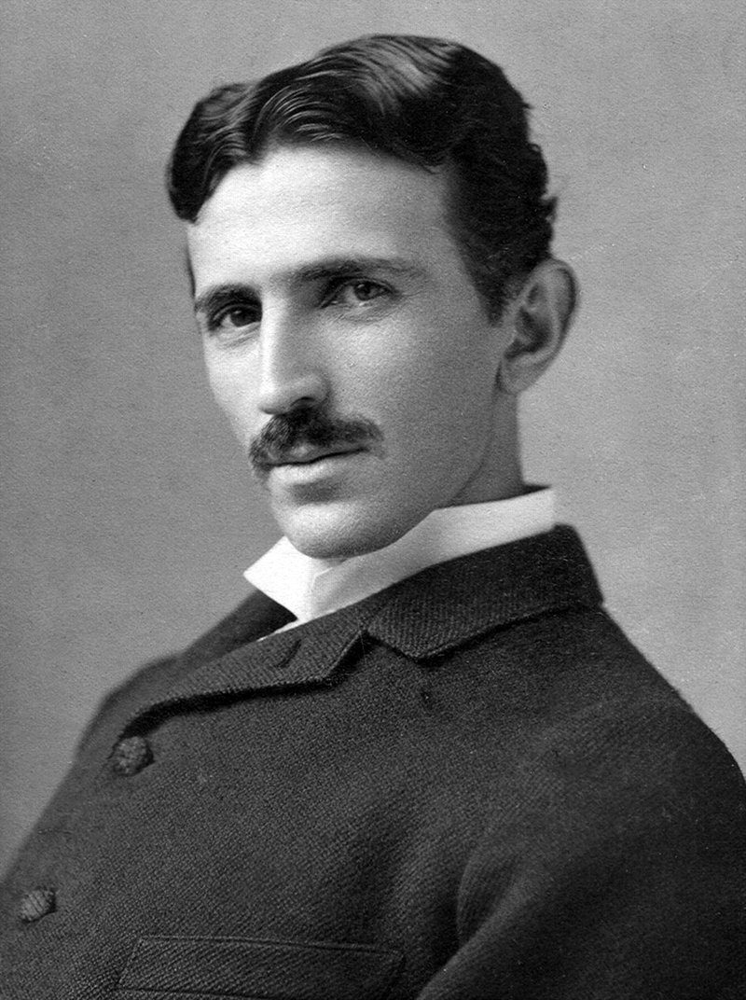
Be alone, that is the secret of invention; be alone, that is when ideas are born.Nikola Tesla 1856–1943 Orrin E. Dunlap Jr., 'An Inventor's Seasoned Ideas: Nikola Tesla, Pointing to "Grievous Errors" of the Past…', The New York Times (8 April 1934), p. X9 — interview with Tesla, 1934 · Quote Investigator, 'Be Alone, That Is the Secret of Invention; Be Alone, That Is When Ideas Are Born' (6 October 2021) Foto: Napoleon Sarony, c. 1890, public domain, via Wikimedia Commons (https://commons.wikimedia.org/wiki/File:Tesla_circa_1890.jpeg) · Public domain (PD-old-100-expired)
Eventyrere
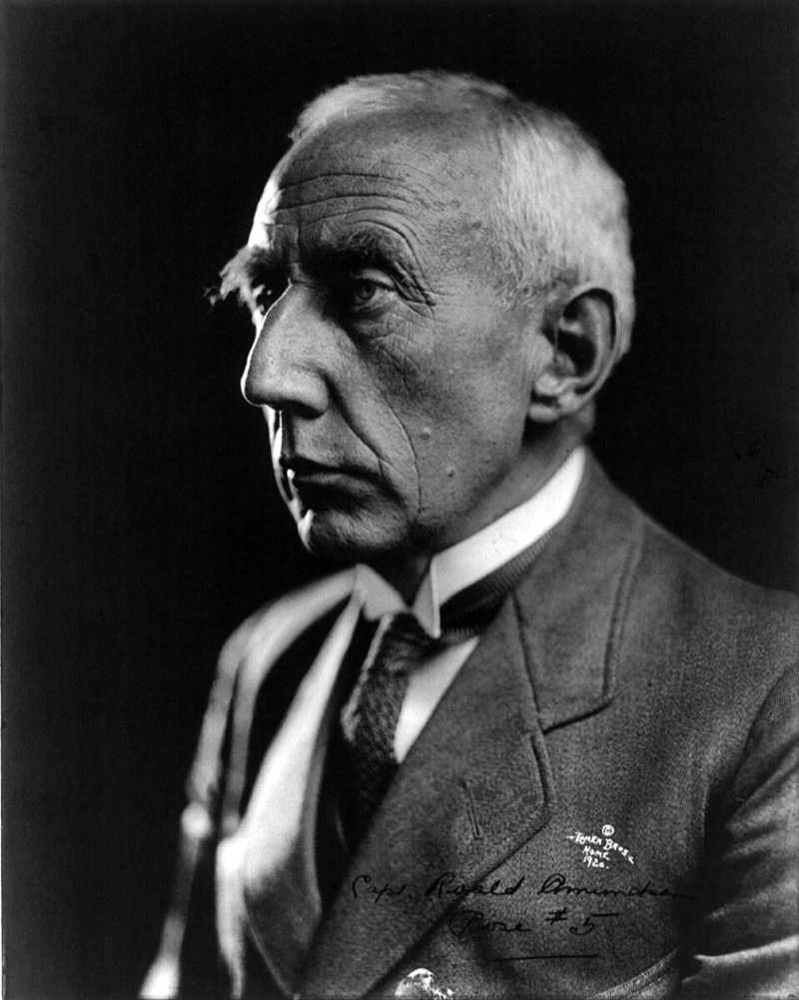
Victory awaits him who has everything in order—luck, people call it. Defeat is certain for him who has neglected to take the necessary precautions in time; this is called bad luck.Roald Amundsen 1872–1928 Sydpolen: Den norske sydpolsfærd med Fram 1910–1912 (The South Pole), 1912 · Norwegian: Bind 1, p. 506 (Kristiania: Jacob Dybwad, 1912); English: Chater tr., vol. I, ch. IX 'The End of the Winter' · Overs. A. G. Chater Foto: Lomen Bros., Nome, Alaska, 1920, public domain, Library of Congress, via Wikimedia Commons (https://commons.wikimedia.org/wiki/File:Roald_Amundsen_cph.3b17878.jpg) · Public domain (PD-US-expired; Library of Congress cph.3b17878)
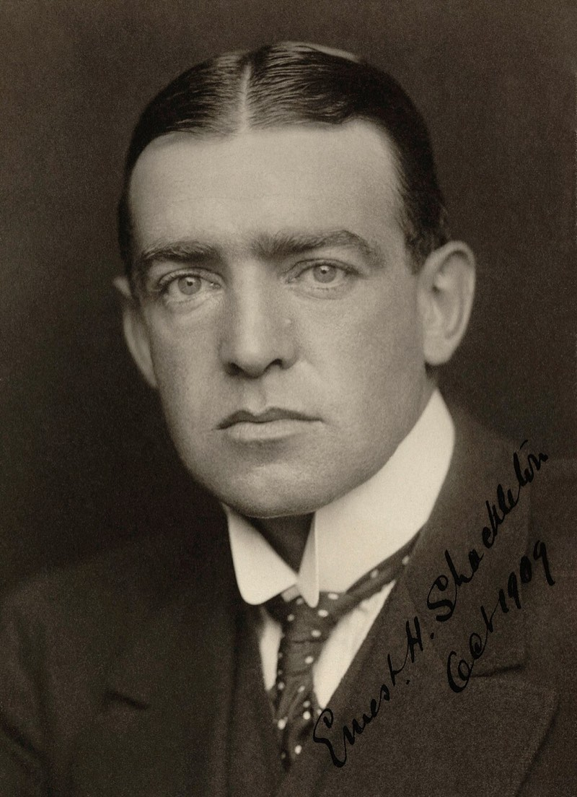
Difficulties are just things to overcome after all.Ernest Shackleton 1874–1922 The Heart of the Antarctic: Being the Story of the British Antarctic Expedition 1907–1909, vol. I (London: William Heinemann), 1909 · Vol. I, ch. XXII 'On the Great Glacier', p. 321 — diary entry for 11 December 1908, ascending the Beardmore Glacier Foto: George Charles Beresford, before 1909 (restored by Adam Cuerden), public domain, National Library of Norway, via Wikimedia Commons (https://commons.wikimedia.org/wiki/File:Ernest_Shackleton_before_1909.jpg) · Public domain (photographer †1938; Commons tag PD-Norway)
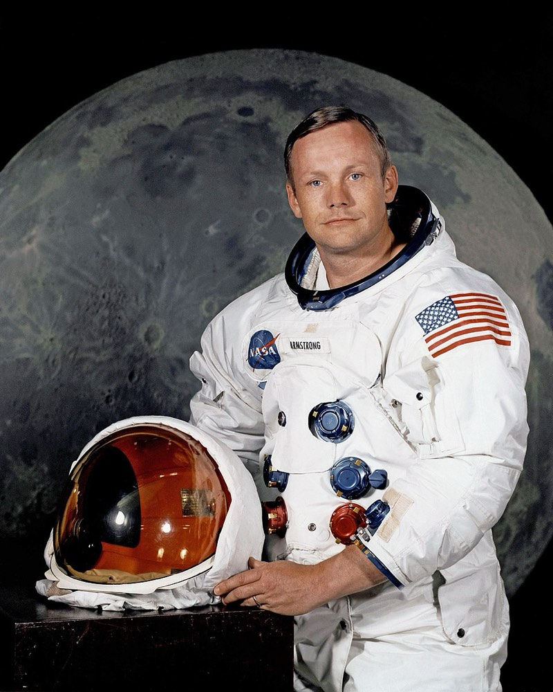
That's one small step for (a) man; one giant leap for mankind.Neil Armstrong 1930–2012 Apollo 11 air-to-ground transmission, as transcribed in the Apollo 11 Lunar Surface Journal (NASA, ed. Eric M. Jones), 'One Small Step', 1969 · Mission elapsed time 109:24:23, 20 July 1969 (21 July UTC), stepping off the LM footpad Foto: NASA (photo S69-31741), public domain, via Wikimedia Commons (https://commons.wikimedia.org/wiki/File:Neil_Armstrong_pose.jpg) · Public domain (PD-NASA)
Film
Nothing in life is worthwhile unless you take risks.Denzel Washington b. 1954 'Fall Forward', Commencement Address at the University of Pennsylvania (16 May 2011), published in Almanac vol. 57, no. 34 (24 May 2011), 2011 · Penn Almanac transcript, 'Commencement Address by Denzel Washington: Fall Forward' Foto: Adam Chitayat, CC BY 4.0, via Wikimedia Commons (https://commons.wikimedia.org/wiki/File:Denzel_Washington_at_the_2024_Toronto_International_Film_Festival_04.jpg); cropped · CC BY 4.0